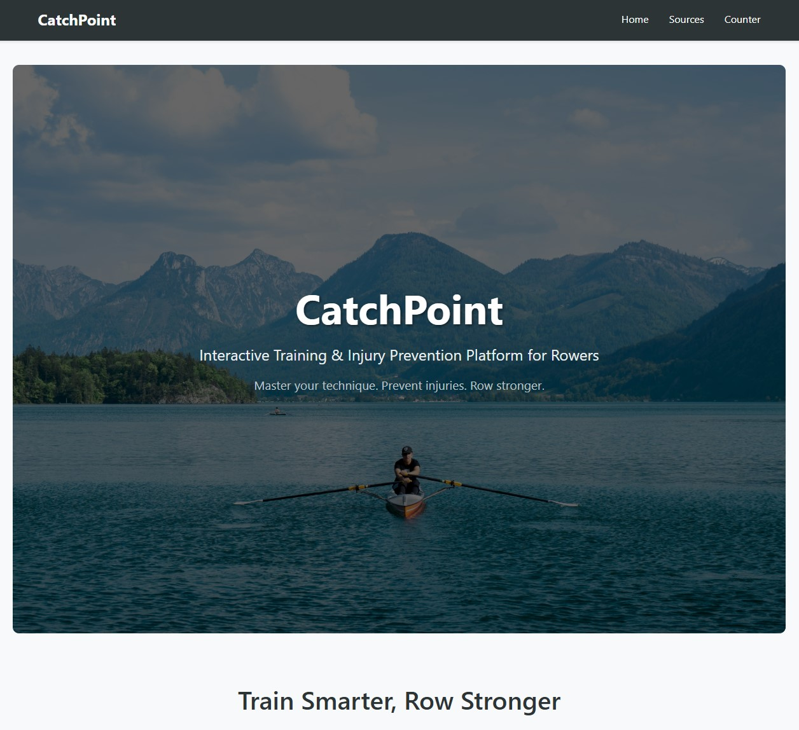

A comprehensive rowing injury prevention application built with Blazor WebAssembly and .NET API. This full-stack platform features interactive visualizations, real-time search capabilities, and educational resources designed to help rowers understand injury prevention and proper technique.

The application demonstrates modern full-stack development with Blazor WebAssembly for the frontend and ASP.NET Core API for the backend. The frontend utilizes component-based architecture with scoped CSS, state management for real-time interactions, and debounced HTTP calls for optimal performance. The backend follows Clean Architecture principles with the same domain-driven design used in the original Rowing API.
A significant technical challenge was implementing real-time search with proper debouncing across multiple data sources. I solved this by creating a unified search interface that simultaneously queries both exercise and drill endpoints, using a 300ms timer that cancels previous requests when users continue typing. This provides instant feedback while preventing excessive API calls and maintaining smooth user experience.
The project showcases modern deployment practices using Azure Static Web Apps with automated CI/CD from GitHub, CORS configuration for cross-origin requests, and proper environment-based configuration management for seamless local development and production deployment.
Technologies: Blazor WebAssembly, ASP.NET Core API, C#, Azure Static Web Apps, Dapper ORM, SQL Server, GitHub Actions CI/CD